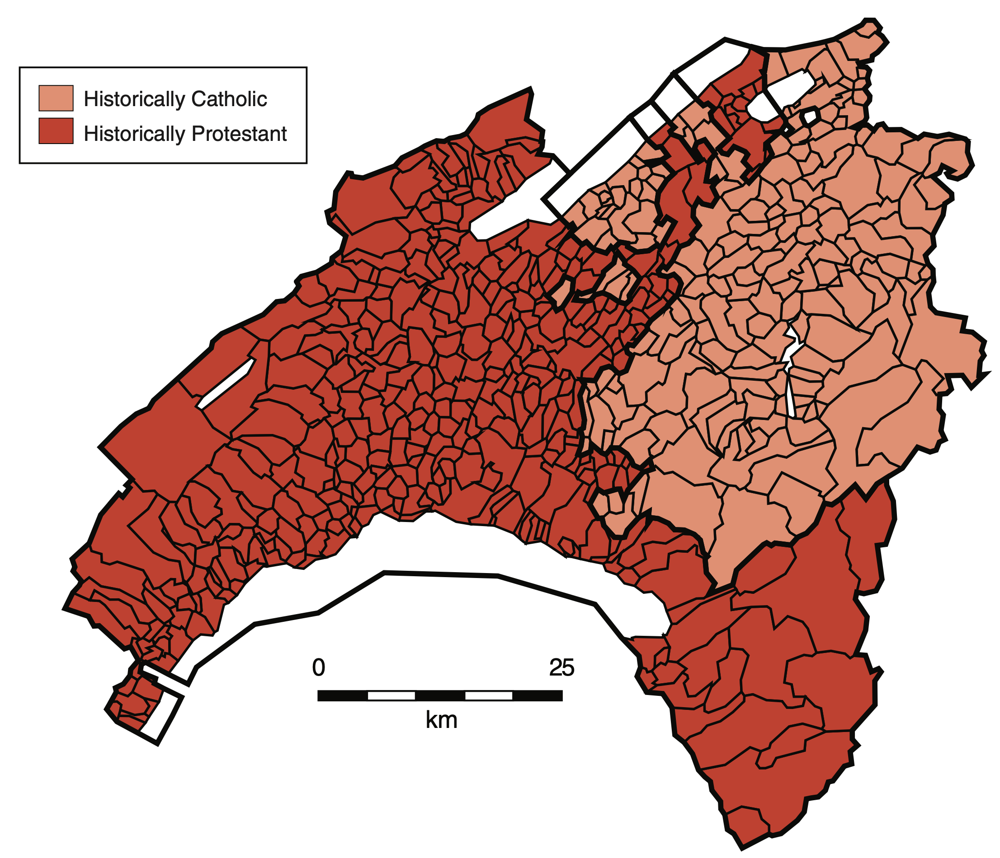

11 Regression Discontinuity Designs
Regression Discontinuity Design (RDD) ist ein Ansatz für die Schätzung von Behandlungseffekten mit Regression, wenn durch einen experimentell oder natürlich gegebenen Umstand die Behandlung an einem Schwellenwert (\(c\)) einer Laufvariable (\(X\)) sprunghaft beeinflusst wird. Ein RDD-Schätzer wird so implementiert, dass lediglich Beobachtungen mit Ausprägungen von \(X\), die knapp ober- oder knapp unterhalb von \(c\) liegen, berücksichtigt werden. Die zentrale Idee hierbei ist, dass Individuen nahe bei \(c\) im Durchschnitt ähnliche Merkmale aufweisen. Beobachtungen nahe \(c\) sind dann insbesondere hinsichtlich potentieller Backdoor-Variablen vergleichbar, sodass deren problematische Pfade geschlossen sind. Das kausale Diagram in Abbildung 11.1 zeigt den grundsätzlichen Zusammenhang.
RDD isoliert Variation auf dem Pfad Oberhalb C → Behandlung B → Y. Somit können Backdoor-Pfade über \(X\) oder weitere (möglichweise unbeobachtbare) Confounder (\(Z\)) vermieden werden, siehe Abbildung 11.1. Der kausale Effekt wird dabei als (lokaler) durchschnittlicher Behandlungseffekt der Diskontinuität auf die Outcome-Variable (\(Y\)) anhand von Beobachtungen nahe bei c ermittelt.
Hinsichtlich der Beeinflussung der Behandlung unterscheiden wir zwischen Sharp und Fuzzy Regression Discontinuity Designs (SRDD/FRDD). Bei einem SRDD ist die Zuweisung der Behandlung deterministisch, d.h. der Schwellenwert in der Laufvariable ist eine harte Grenze für die Gruppenzugehörigkeit: Die Wahrscheinlichkeit der Behandlung \(p\) springt bei \(X=c\) von \(p=0\) um \(\Delta p = 1\) auf \(p=1\).
Bei einem FRDD ist die Zuordnung in Behandlungs- und Kontrollgruppe nicht perfekt durch den Schwellenwert \(c\) bestimmt: Die Behandlungswahrscheinlichkeit \(p\) springt bei \(X=c\) um \(\Delta p<1\). Im FRDD können grundsätzlich also sowohl behandelte Subjekte als auch Kontroll-Beobachtungen auf beiden Seiten der Diskontinuität vorliegen – die Trennung der Gruppen ist “unscharf”1. Dieser Umstand ist oft in empirischen Studien mit nicht-experimentellen Daten gegeben, wenn es neben der Überschreitung von \(c\) weitere Determinanten der Behandlung gibt (für die wir nicht kontrollieren können). Die Wahl zwischen SRDD und FRDD hängt grundsätzlich vom datenerzeugenden Prozess und der Forschungsfrage ab.
1 Engl. fuzzy.
11.2 Manipulation am Schwellenwert
Eine wichtige Annahmen für die Gültigkeit einer RDD-Schätzung ist, dass keine Manipulation der Gruppenzugehörigkeit am Schwellenwert vorliegt. Wenn sich Subjekte nahe des Schwellenwertes \(c\) — d.h. in Abhängigkeit der Laufvariable \(X\) — systematisch in den Confoundern \(Z\) unterscheiden, können wir den Backdoor-Pfad Oberhalb C → Behandlung B → Y nicht isolieren. Wir erhalten dann eine verzerrte Schätzung des Behandlungseffekts.
In empirischen Studien mit – insbesondere mit Individuen – kann Selbstselektion auftreten: Menschen mit \(X<c\) aber nahe \(c\) (hier Kontrollgruppe) könnten aufgrund unbeobachtbarer Eigenschaften \(Z\) die Ausprägung ihrer Laufvariable zu \(X>c\) (hier Behandlungsgruppe) manipulieren. Wenn \(Z\) die Outcome-Variable beeinflusst, bleibt der Backdoor-Pfad Oberhalb C → Behandlung B → Y so bestehen.
Manipulation resultiert in Häufung von Beobachtungen am Schwellenwert. Die Verteilung der Laufvariable kann auf diese Unregelmäßigkeit hin untersucht werden. McCrary (2008) schlägt hierfür einen Verfahren vor, das die Kontinuität der Dichtefunktion von \(X\) am Schwellenwert testet.
Der Test von McCrary (2008) ist in rdd::DCdensity() implementiert. Wir zeigen die Anwendung des Tests anhand der oben simulierten Daten. Beachte, dass \(X_i\sim U(0, 10)\), d.h. die Laufvariable ist bei \(X_i = c\) kontinuierlich verteilt. Die Nullhypothese (keine Manipulation) gilt für die simulierten Daten.
Der p-Wert ist größer als jedes übliche Signifikanzniveau. Damit liegt starke Evidenz für die Nullhypothese (keine Diskontinuität) und gegen Manipulation am Schwellenwert vor.
Cattaneo, Jansson, und Ma (2020) (CMJ) schlagen eine Weiterentwicklung des McCrary-Tests vor, die höhere statistische Macht gegenüber Diskontinuitäten hat am Schwellenwert hat. Der CJM-Test ist im Paket rddensity implementiert.
Mit der Funktion rddensity::rdplotdensity() erzeugen wir eine grafische Auswertung.
Die obige Abbildung zeigt die geschätzten Dichtefunktionen. Erwartungsgemäß finden wir eine große Überlappung der zugehörigen Konfidenzbänder (schattierte Flächen) am Schwellenwert \(c=5\).
Mit summary() erhalten wir eine detaillierte Zusammenfassung des Tests.
Gemäß des p-Werts (P > |T|) von 0.74 spricht der CJM-Test noch deutlicher gegen eine Diskontinuität als der McCrary-Test.
11.2.1 Case Study: Amtsinhaber-Vorteil (Lee 2008)
Lee (2008) untersucht den Einfluss des Amtsinhaber-Vorteils auf die Wahl von Mitgliedern des US-Repräsentantenhaus. In den meisten Wahlkreisen entfallen große Anteile der Stimmen (oder gar ausschließlich) auf demokratische und republikanische Kanditat*innen, sodass sich die Studie auf diese Parteien beschränkt. Entfällt die Mehrheit der Stimmen auf eine*n Kandidat*in, gewinnt diese*r den Sitz für den Wahlkreis. Durch die Analyse der 6558 Wahlen im Zeitraum 1946-1998 mit einem SRDD kommt die Studie zu dem Ergebnis, dass Amtsinhabende im Durchschnitt einen Vorteil von etwa 8% bis 10% bei der Wahl haben. Dieses Ergebnis kann verschiedene Ursachen haben, bspw. dass die amtierende Partei höhere finanzielle Ressourcen besitzt und von einer besseren Organisation und durch Instrumentalisierung staatlicher Strukturen für die eigenen Zwecke profitiert.
Anhand der Datensätze house und house_binned illustrieren wir nachfolgend die Schätzung von SRDD-Modellen für den Wahlerfolg der demokratischen Partei, wenn diese Amtsinhaber ist. Wir lesen hierfür zunächst die Datensätze house und house_binned ein und verschaffen uns einen Überblick.
Der Datensatz house enthält die Stimmenanteile demokratischer Kandidat*innen bei der Wahl zum Zeitpunkt \(t\) (\(\textup{Stimmen}_t\)) sowie die Differenz zwischen demokratischen und republikanischen Stimmenanteilen bei der vorherigen Wahl, d.h. zum Zeitpunkt \(t-1\) (\(\textup{Stimmen}_{t-1}\)). Der Schwellenwert für einen Wahlsieg liegt bei Stimmengleichheit, d.h. \(\textup{Stimmen}_{t-1} = 0\).
house_binned ist eine aggregierte Version von house mit Mittelwerten von jeweils 50 gleichgroßen Intervallen oberhalb und unterhalb der Schwelle von \(\textup{Stimmen}_{t-1} = 0\). Dieser Datensatz eignet sich, um einen ersten Eindruck des funktionalen Zusammenhangs auf beiden Seiten zu erhalten. Wir stellen zunächst diese klassierten Daten mit ggplot2 graphisch dar.
Die Grafik zeigt eindeutig einen Sprung von \(\textup{Stimmen}_t\) bei \(\textup{Stimmen}_{t-1} = 0\). Weiterhin erkennen wir, dass der Zusammenhang nahe \(0\) vermutlich jeweils gut durch eine lineare Funktion approximiert werden kann. Eine Modell-Spezifikation mit gleicher Steigung auf beiden Seiten des Schwellenwertes scheint hingegen weniger gut geeignet. Wir vergleichen diese Spezifikationen nachfolgend.
Zunächst fügen wir dem Datensatz eine Dummyvariable B hinzu. Diese dient als Indikator für den Wahlgewinn in der letzten Wahl und zeigt die Amtsinhaberschaft (Behandlung) an.
Wir überprüfen die Laufvariable mit dem CJM-Test auf Manipulation am Schwellenwert \(c=0\).
Die Abbildung der geschätzten Dichtefunktionen der Laufvariable und der p-Wert von \(0.15\) sind Evidenz für keine Manipulation am Schwellenwert.
Um den Behandlungseffekt anhand eines SRDDs zu ermitteln, schätzen wir das Interaktionsmodell \[\begin{align*} \text{Stimmen}_{t,i} =&\, \beta_0 + \beta_1 B_i + \beta_2 (\text{Stimmen}_{t-1,i} - 50)\\ +&\, \beta_3(\text{Stimmen}_{t-1,i} - 50)\times B_i + u_i \end{align*}\] zunächst für eine Bandweite von \(h = 0.5\). Aufgrund der Skalierung der Daten (Wahlergebnisse in %) bedeutet dies die Verwendung des gesamten Datensatzes für die Schätzung.
Der geschätzte Koeffizient von \(B\) (BTRUE) beträgt etwa \(0.12\) und ist hochsignifikant. Übereinstimmend mit der grafischen Darstellung der klassierten Daten erhalten wir also eine positive Schätzung des Behandlungseffekts. Die Interpretation ist, dass die amtierenden Demokraten bei der Wahl von einem Amtsinhabervorteil profitieren. Dieser Effekt schlägt sich als Stimmenbonus von geschätzten 12% nieder. Diese Schätzung des Behandlungseffekts könnte jedoch verzerrt sein:
Die (implizite) Wahl von \(h=0.5\) in unserer Schätzung macht die Isolation des relevanten Frontdoor-Paths (\(c=0\) → Treatment → \(\textup{Stimmen}_t\)) wenig plausibel. \(h\) sollte mit einer datengetriebenen Methode gewählt werden.
Weiterhin könnte die lineare funktionale Form der Regression inadäquat sein: Die lineare Approximation der wahren Regressionsfunktion nahe des Schwellenwerts \(0\) könnte unzureichend sein und in einer verzerrten Schätzung des Effekts resultieren. Zur Überprüfung der Robustheit der Ergebnisse sollte mit Schätzungen anhand nicht-linearer Spezifikationen verglichen werden.
Um diesen Gefahren für die Validität der Studie zu begegnen, schätzen wir nun weitere Spezifikationen. Im Folgenden verwenden wir eine Bandweitenschätzung gemäß G. Imbens und Kalyanaraman (2012).
Wir schätzen zunächst erneut das lineare Interaktionsmodell, diesmal jedoch mit der Bandweite IK_BW.
Für den Vergleich mit einer nicht-linearen Spezifikation schätzen wir auch ein quadratisches Interaktionsmodell.
Für eine Gegenüberstellung der Ergebnisse verwenden wir modelsummary().
Die Spalte (1) in der obigen Tabelle zeigt die lokale Schätzung mit einem linearen Interaktionsmodell. Wir erhalten damit einen Behandlungseffekt von etwa \(8.5\%\). Der Schätzwert fällt also etwas geringer aus als für die globale KQ-Schätzung des linearen Interaktionsmodells. Für das Modell (2) mit quadratischer Spezifikation liegt der Schätzwert mit \(6.8\%\) in der selben Größenordnung. Beide Schätzungen ergeben einen signifikant von \(0\) verschieden Effekt. Weiterhin fällt auf, dass in beiden Modellen keine Evidenz für unterschiedliche Formen der Regressionsfunktionen auf beiden Seiten des Schwellenwerts vorliegen: sämtliche Koeffizientenschätzwerte der Interaktionsterme haben hohe Standardfehler und sind nicht signifikant. Im quadratischen Modell hat auch der Term \(\textup{Stimmen}_{t-1}^2\) keinen signifikanten Effekt. Diese Ergebnisse deuten darauf hin, dass eine lineare Spezifikation ausreichend ist.
SRDD-Schätzung mit LOESS
Wir illustrieren nachfolgend die Schätzung des Behandlungseffekts mit einer flexiblen und in der Praxis häufig verwendeten Methode für lokale Regression. Die nachfolgende interaktive Grafik zeigt die klassierten Daten aus Lee (2008) auf dem Intervall \([-0.5,0.5]\) gemeinsam mit einer nicht-parametrischen Schätzung des Zusammenhangs von StimmenT und StimmenTm1 mittels LOESS.5 Diese Implementierung von lokaler Regression nutzt einen tricube kernel. Über den Input kann eine Bandweite \(l\in(0,1]\) für den LOESS-Schätzer auf beiden Seiten des Schwellenwerts \(0\) gewählt werden. Die Bandweite ist hier der Anteil der Beobachtungen an der gesamten Anzahl an Beobachtungen, die in die Schätzung einbezogen werden sollen.
5 LOESS ist eine Variante von lokaler Polynom-Regression. Kapitel 11.5 erläutert nicht-parametrische Regression mit LOESS im Detail.
Für die Schätzung am Schwellenwert berücksichtigte Daten sind in orange kenntlich gemacht. Die rote Linie zeigt die geschätzte Regressionsfunktion über gleichmäßig verteilte Werte von StimmenTm1 auf \([-0.5,0.5]\). Die Grafik verdeutlicht, dass die LOESS-Methode flexibel genug ist, um lineare und nicht-lineare Zusammenhänge abbilden zu können. Wie zuvor ist eine adäquate Wahl der Bandweite wichtig:
Der mit LOESS geschätzte Zusammenhang auf beiden Seiten des Schwellenwerts ist etwa linear für den voreingestellten Parameter (\(l = 0.28\)).
Für größere Werte von \(l\) nähert sich die Schätzung weiter einem linearen Verlauf an. Die Schätzung des Effekts bleibt vergleichbar mit den Ergebnissen des linearen Interaktionsmodell (s. oben).
Für kleinere \(l\) erhalten wir eine stärkere Anpassung der Schätzung an die Daten. Zu kleine Werte führen zu einer Überanpassung (overfitting). Insbesondere tendiert die geschätzte Funktion zu extremer Steigung nahe des Schwellenwerts → stark verzerrte Schätzung des Effekts!
11.3 Fuzzy Regression Discontinuity Design
Ein FRDD liegt vor, wenn die Zuweisung der Behandlung \(B\) durch die Laufvariable \(X\) (und möglicherweise weitere Variablen \(Z\)) beeinflusst wird. Im Vergleich zum SRDD ist die Behandlung dann also nicht ausschließlich durch Überschreiten des Schwellenwerts \(X = c\) bestimmt.
Abbildung 11.2 zeigt den grundsätzlichen Zusammenhang. Hier genügt es weiterhin für \(X\) (und ggf. \(Z\)) zu kontrollieren, um den Pfad oberhalb \(C\) → Behandlung \(B\) → \(Y\) zu isolieren. Der so für Behandlung \(B\) ermittelte Effekt auf \(Y\) entspricht jedoch nicht dem “vollständigen” Behandlungseffekt, da bei \(c\) die Zuweisung der Behandlung nicht von \(0\) auf \(100\%\) springt. Die Schätzung des FRDD berücksichtigt dies und skaliert den geschätzten Effekt entsprechend.
Wir betrachten zunächst den Zusammenhang \[\begin{align} Y_i = \beta_0 + \beta_1 B_i + \beta_2 (X_i - c) + u_i.\label{eq-simpleFRDD} \end{align}\] In einem FRDD springt die Behandlungswahrscheinlichkeit am Schwellenwert \(c\) um \(\Delta p<1\). Wir können \(B\) also nicht als deterministische Funktion von \(X\), welche die Zuweisung zu Behandlungs- bzw. Kontrollgruppe am Schwellenwert \(c\) anzeigt (wie im SRDD), definieren. Stattdessen betrachten wir \[\begin{align} P(B_i=1\vert X_i) = \begin{cases} g_{X_i<c}(X_i), & X_i < c \\ g_{X_i\geq c}(X_i) & X_i \geq c \end{cases}\,. \label{eq-BFRDD} \end{align}\] Die Funktionen \(g_{X_i<c}\) und \(g_{X_i\geq c}\) können verschieden sein. Es muss jedoch \[g_{X_i<c}(X_i = c) \neq g_{X_i\geq c}(X_i = c)\] gelten. Die Behandlungsvariable \(B_i\) ist im FRDD also eine (binäre) Zufallsvariable, deren bedingte Wahrscheinlichkeitsfunktion \(P(B_i=1\vert X_i)\) am Schwellenwert \(c\) eine Diskontinuität aufweist. Die nächste Grafik zeigt heispielhafte Verläufe nicht-linearer bedingter Wahrscheinlichkeitsfunktion für die Behandlung mit einer Diskontinuität bei \(X_i = c\).
Definition \(\eqref{eq-BFRDD}\) bedeutet, dass eine KQ-Schätzung von \(\beta_1\) anhand \(\eqref{eq-simpleFRDD}\) eine verzerrte Schätzung des Behandlungseffekts ist: Der in \(\widehat{\beta}_1\) erfasste Effekt auf \(Y\) ist auf einen Sprung der Behandlungswahrscheinlichkeit bei \(X_i = c\) um weniger als \(100\%\) zurückzuführen. Der wahre Behandlungseffekt wird also unterschätzt. Daher muss \(\widehat{\beta}_1\) skaliert werden, sodass die Schätzung als Effekt einer Änderung der Behandlungswahrscheinlichkei um \(100\%\) interpretiert werden kann — der erwartete Effekt, wenn ausschließlich Subjekte mit \(X_i\geq c\) behandelt würden. Diese skalierte Schätzung erhalten wir mit IV-Regression (vgl. Kapitel XYZ). Hierfür nutzen wir für \(B_i\) die Instrumentvariable \[\begin{align*} D_i = \begin{cases} 0, & X_i < c \\ 1, & X_i \geq c. \end{cases} \end{align*}\]
Angenommen \(g_{X_i\geq c}(X_i) = \alpha_0\) und \(g_{X_i<c}(X_i) = \alpha_0 + \alpha_1\) mit \(\alpha_0 + \alpha_1 < 1\) (vgl. rote Funktion in Abbildung 11.2). Der FRDD-Schätzer des Behandlungseffekts ist dann \(\widehat{\gamma}_\textup{FRDD}\) im 2SLS-Verfahren mit den Regressionen \[\begin{align} \begin{split} (\mathrm{I})\qquad B_i =&\, \alpha_0 + \alpha_1 D_i + \alpha_2 (X_i - c) + e_i,\\ (\mathrm{II})\qquad Y_i =&\, \gamma_0 + \gamma_1 \widehat{B}_i + \gamma_2 (X_i - c) + \epsilon_i, \end{split}\label{eq:FRDD_simpleIV} \end{align}\] wobei \(\widehat{B}_i\) die angepassten Werte aus Stufe \((\mathrm I)\) und \(e_i\) sowie \(\epsilon_i\) Fehlterterme sind.
Analog zum SRDD müssen in empirischen Anwendungen geeignete Spezifikationen für die Regressionsfunktionen \(\eqref{eq-simpleFRDD}\) und \(\eqref{eq-BFRDD}\) gewählt und der 2SLS-Schätzer \(\eqref{eq:FRDD_simpleIV}\) entsprechend angepasst werden. Ein einfaches Interaktionsmodell wäre \[\begin{align} \begin{split} (\mathrm{I})\qquad B_i =&\, \alpha_0 + \alpha_1 D_i + \alpha_2 (X_i - c)\\ +&\, \alpha_3 (X_i - c) \times D_i + e_i,\\ \\ (\mathrm{II})\qquad Y_i =&\, \gamma_0 + \gamma_1 \widehat{B}_i\\ +&\, \gamma_2 (X_i - c) + \gamma_3 (X_i-c)\times\widehat{B}_i, \epsilon_i \end{split},\label{eq:FRDD_lintIV} \end{align}\] d.h. wir instrumentieren \(B_i\) mit \(D_i\) und dem Interaktionsterm \((X_i-c)\times D_i\).
Wie im SRDD werden die IV-Ansätze für das FRDD \(\eqref{eq:FRDD_simpleIV}\) und \(\eqref{eq:FRDD_lintIV}\) in empirischen Studien unter Berücksichtigung einer Bandweite (i.d.R. dieselbe Bandweite für beide Stufen) angewendet.
11.4 Case Study: Protestantische Arbeitsethik
Die Studie Beyond Work Ethic: Religion, Individual, and Political Preferences (Basten und Betz 2013) untersucht den Zusammenhang zwischen Religion, individuellen Merkmalen und politischen Präferenzen. Das Hauptaugenmerk ist die Rolle von Religiosität als Einflussfaktor auf politische Einstellungen. Die Hypothese der Autoren ist, dass Religiosität eines Individuums über den traditionellen Rahmen von Moralvorstellungen und sozialen Normen hinaus auch die politischen Präferenzen beeinflusst. Eine entsprechende Theorie wurde zu Beginn des 20. Jahrhunderts entwickelt und prominent von Max Weber (vgl. Weber 2004) vertreten. Weber argumentiert, dass die protestantische Arbeitsethik einen entscheidenden Einfluss auf die Entwicklung des Kapitalismus hatte. Laut Weber führte der protestantische Glaube an harte Arbeit, ein sparsames Leben und ethisches Verhalten zur einer in den damaligen Gesellschaften weit verbreiteten Geisteshaltung, die wirtschaftliches Wachstum förderte und den Aufstieg des Kapitalismus begünstigte.
Basten und Betz (2013) nutzen Wahlergebnisse sowie geo- und soziodemographische Datensätze für schweizer Gemeinden, um den Zusammenhang zwischen Religiosität und politischen Präferenzen wie links-rechts-Ausrichtung, Einstellungen zur Umverteilung und Einwanderung zu untersuchen. Hierfür verwenden die Autoren ein FRDD, dass eine historisch bedingte Diskontinuität der geographischen Verteilung von evangelischer bzw. katholischer Religionszugehörigkeit zwischen den Kantonen Freiburg (überwiegend dunkelrote Region, frz. Fribourg) und Waadt (kleinere hellrote Region, frz. Vaud) ausnutzt. Die historische Verteilung der Konfessionen in der betrachteten Region im 16. Jahrhundert durch Abspaltung des Kantons Freiburg ist in Abbildung 11.3 dargestellt.
Aufgrund von Bevölkerungsbewegungen ist die Verteilung der Konfessionen zwar nicht mehr eindeutig durch die Kantonsgrenze bestimmt, jedoch sind die Gemeinden der betrachteten Kantone auch heute noch mehrheitlich protestantisch bzw. katholisch. Es ist plausibel, dass eine Prägung gemäß Webers Theorie vorliegt, sich die Gemeinden nahe der Grenze aber hinsichtlich anderer Charakteristika (insb. der Bevölkerungsstruktur) nicht systematisch unterscheiden.

Die Ergebnisse der Studie zeigen einen signifikanten Einfluss von Protestantismus auf politische Präferenzen, die über traditionelle Moralvorstellungen hinausgehen: Die Autoren finden Hinweise, dass Einwohner evangelisch geprägter Gemeinden eher konservative soziale und politische Ansichten vertreten. Eine mögliche Erklärung für diesen Effekt ist, dass religiöse Institutionen auch eine soziale und politische Agenda verfolgen, die von den Gläubigen internalisiert wird.
11.4.1 Aufbereitung der Daten
In diesem Kapitel zeigen wir, wie die Kernergebnisse der Studie mit R reproduziert werden können. Hierfür werden folgende Pakete benötigt.
Das Papier sowie der Datensatz BastenBetz.dta sind auf der Übersichtsseite der AEA verfügbar. Die Daten liegen im STATA-Format .dta vor.6
6 Siehe alternativ das working paper, falls kein Abbonement für AEA-Journals vorliegt.
Der Datensatz BastenBetz enthält Beobachtungen zu 509 schweizer Gemeinden. Eine Vielzahl an Variablen ist lediglich für Robustheits-Checks relevant. Für die Reproduktion der Kernergebnisse erstellen wir zunächst einen reduzierten Datensatz und transformieren einige Variablen.
Die Definitionen der Variablen sind in Tabelle 11.1 gegeben. Die Präferenzen pfl, pfr und pfi basieren auf Wahlergebnissen auf Gemeindeebene zu Volksentscheiden.
| Variable | Definition |
|---|---|
prot |
Anteil Prothestanten im Jahr 1980 (%) |
gini |
Gini-Koeffizient |
bord |
Laufdistanz zur Kantonsgrenze (Km) |
vaud |
Dummyvariable: Gemeinde im Kanton Waadt |
pfl |
Präferenz für Freizeit (%) |
pfr |
Präferenz für Umverteilung (%) |
pfi |
Präferenz für wirtschaftliche Intervention des Staats (%) |
BastenBetz – Variablen und Definitionen
Für die Berechnung der optimalen Bandweite des FRDD verwenden wir einen MSE-optimalen Schätzer, der in der Funktion rdrobust::rdbwselect() implementiert ist.7
7 Basten und Betz (2013) setzen BW = 5.01, den Durchschnitt von IK-Schätzungen über Modelle sämtlicher betrachteter Outcome-Variablen. Diese Bandweite liegt nahe des Ergebnisses von rdbwselect. Wir verwenden nachfolgend die Schätzung OB.
11.4.2 Deskriptive Statistiken
Zur Reproduktion von Tabelle 1 aus Basten und Betz (2013) erzeugen wir eine nach Kantonen gruppierte Zusammenfassung der Daten und berechnen deskriptive Statistiken. Wie im Paper berücksichtigen wir hierbei nur Gemeinden innerhalb der geschätzten optimalen Bandweite OB.
Für die tabellarische Darstellung transformieren wir in ein weites Format, sodass die Tabelle die deskriptive Statistiken spaltenweise für die Kantone zeigt.
Die Tabelle erzeugen wir mit gt::gt().
Die Statistiken in der obigen Tabelle scheinen konsistent mit der (historischen) Verteilung der Religionszugehörigkeit und politischen Einstellung gemäß der Hypothese: Im überwiegend katholischen Freiburg finden wir eine größere Einkommensungleichkeit und höhere aus Wahlergebnissen abgeleitete Präferenzen für Freizeit, Umverteilung sowie staatliche Interventionen.
11.4.3 Modellspezifikation und First-Stage-Ergebnisse
Die Kantone Waadt und Freiburg haben bis heute mehrheitlich protestantische bzw. katholische Gemeinden. Die Verteilung von Protestantismus ist also, u.a. aufgrund von Bevölkerungsbewegungen, nicht mehr deterministisch. An der Kantonsgrenze besteht jedoch eine deutliche Diskontinuität im Anteil protestantischer Einwohner, die auf die historische Verteilung der Religionszugehörigkeit zurückzuführen ist. Damit kann ein FRDD implementiert werden, bei dem die Distanz zur Grenze (bord) die zentrierte Laufvariable ist und die Zugehörigkeit zum Kanton Waadt (vaud) ein Instrument für die Behandlungsvariable (prot) ist.
Wir nutzen die Funktion rdrobust::rdplot um diesen Zusammenhang für verschiedene Bandweiten anhand des linearen Interaktionsmodells \[\begin{align}
\begin{split}
\textup{prot}_i =&\, \alpha_0 + \alpha_1 \textup{vaud}_i + \alpha_2 \textup{bord}_i \\
+&\, \alpha_3 \textup{bord}_i \times \textup{vaud}_i + u_i
\end{split}\label{eq:BBFSR}
\end{align}\] grafisch darzustellen. Dies ist die First-Stage-Regression für die 2SLS-Schätzung der Behandlungseffekte.
Wir sammeln die Ergebnisse in einem Plot-Gitter mit cowplot::plot_grid().
Die Grafiken in zeigen deutliche Hinweise auf die Diskontinuität in prot nahe der Kantonsgrenze. Die Größe des geschätzten Sprungs scheint nur wenig sensitiv gegenüber der gewählten Bandweite zu sein. Die Signifikanz des Effekts können wir anhand der jeweiligen KQ-Regressionen beurteilen.8
8 Wir nutzen update() um die Regression mit weniger Code für verschiedene Bandweiten zu schätzen.
Für die geschätze Bandweite schätzen wir einen hochsignifikanten Sprung in prot von etwa 67% an der Kantonsgrenze. Auch für größere Bandweiten von 10km und 20km sowie für den gesamten Datensatz finden wir vergleichbare signifikante Effekte, was eine bei zunehmender Distanz zur Grenze persistente Diskrepanz der Religionszugehörigkeit bestätigt.
11.4.4 Second-Stage-Ergebnisse
Wir schätzen nun den LATE von Protestantismus für die Outcome-Variablen gini, pfl, pfi und pfr, vgl. Tabelle 11.1. Die Spezifikation für die Second-Stage-Regression der FRDD-Schätzung ist \[\begin{align}
\begin{split}
Y_i = \gamma_0 + \gamma_1 \widehat{\textup{prot}}_i + \gamma_2 \textup{bord}_i + \gamma_3 \textup{bord}_i \times \textup{vaud}_i + e_i
\end{split},
\end{align}\] wobei \(\widehat{\textup{prot}}_i\) angepasste Werte aus der KQ-Schätzung von \(\eqref{eq:BBFSR}\) mit Bandweite OB sind. Dazu erzeugen wir zunächst eine angepasste Version des Objekts BastenBetz, welche nur Gemeinden innerhalb der Bandweite enthält.
Zur Illustration schätzen wir nun die Second-Stage-Regression für \(Y = \textup{pfl}\).
Der Koeffizient prot_fitted ist der gesuchte Behandlungseffekt. Beachte, dass die von summary() berechneten Standardfehler ungültig sind, weil diese die zusätzliche Unsicherheit durch die Berechnung von \(\widehat{\textup{prot}}\) über die First-Stage-Regression nicht berücksichtigen. Nachfolgend nutzen wir AER::ivreg(), um komfortabel gültige (heteroskedastie-robuste) Inferenz betreiben zu können.9
9 Die Autoren geben an, robuste SEs zu nutzen. Das scheint nicht der Fall zu sein, denn vcov = "HC0" liefert die Ergebinsse im Paper. Die von Stata berechneten HC1-SEs weichen ab. Dies ändert allerdings nichts an der Signifikanz der Koeffizienten. Wir nutzen vcov = "HC1".
Die Koeffizienten von prot in der obigen Tabelle sind die mit 2SLS ermittelten erwarteten Behandlungseffekte einer 100%-Reformation (d.h. von 100% katholisch zu 100% protestantisch) für eine durchschnittliche Gemeine nahe der Kantonsgrenze. Es handelt sich jeweils um einen lokalen durchschnittlichen Behandlungseffekt (LATE). Gem. der Definition der abhängigen Variablen, interpretieren wir die Koeffizienten von prot in de Regressionen (1), (2) und (3) als erwartete Prozentänderung durch Reformation. Der Koeffizient in Regression (4) gibt die erwartete Änderung des Gini-Index an. Sämtliche geschätzte Effekte sind signifikant und haben ein mit der Hypothese der Autoren konsistentes negatives Vorzeichen.
Die Ergebnisse sind Evidenz, dass Protestantismus zu verringerter Präferenz für Freizeit, Umverteilung sowie wirtschaftspolitische Intervention seitens des Staats führt. Auch die ökonomische Ungleichheit ist signifikant geringer, als in einer durchschnittlichen vollständig katholischen Gemeinde.
11.4.5 Addendum: FRDD-Schätzung mit rdrobust()
Die Funktion rdrobust::rdrobust() erlaubt die Schätzung von SRDD und FRDD mit einer Vielzahl von Optionen, s. ?rdrobust. Dies erleichtert die Schätzung mehrerer Modellspezifikationenen und Bandweiten. Mit dem nachstehenden Befehl schätzen wir den LATE von Reformation auf die Präferenz für Umverteilung anhand lokaler quadratischer Regression. Der Output gibt einen Überblick der Bandweitenschätzung sowie der 2 Stufen des 2SLS-Schätzers, inkl. robuster Inferenzstatistiken.
Auch für die quadratische Spezifikation erhalten wir mit -5.047 ein vergleichbares signifikantes Ergebnis für den LATE von Protestantismus auf Umverteilung, vgl. Spalte (2) in der Tabele mit den 2SLS-Ergebnissen.
Mit der Option bwselect = "msetwo" kann die Bandweite jeweils für die lokale Regression links- und rechtssetig des Schwellenwerts geschätzt werden.
Trotz Diskrepanz der geschätzten Bandweiten erhalten wir eine größere aber vergleichbare Schätzung für einen negativen Effekt.
11.5 Nicht-parametrische Regression
Nicht-parametrische Regression ist ein statistisches Verfahren, um die Beziehung zwischen Prädiktoren und einer Outcome-Variable zu modellieren, ohne eine spezifische Form der Regressionsfunktion festzulegen. Im Gegensatz zu parametrischen Verfahren, bei denen eine funktionale Form (z.B. eine lineare oder quadratische Beziehung) angenommen wird, lässt die nicht-parametrische Regression die Form der Funktion flexibel und passt sich den Daten lokal an.
Die Nadaraya-Watson-Regression (Kernel-Regression) ist ein Verfahren für nicht-parametrische Regression, bei dem die Schätzung der Outcome-Variable \(Y\) an einem Prädiktorwert \(x\) als gewichteter Durchschnitt der beobachteten \(Y\)-Werte der benachbarten Punkte berechnet wird. Die Gewichte werden durch eine Kernel-Funktion bestimmt, die die Nähe der Datenpunkte zum Prädiktorwert \(x\) berücksichtigt: Je näher ein Datenpunkt, desto größer ist sein Einfluss auf die lokale Schätzung. Formal ist der Schätzer der Regressionsfunktion \(\hat{f}(x)\) durch folgende Gleichung definiert:
\[\begin{align} \hat{f}(x) = \frac{\sum_{i=1}^n K\left(\frac{x - X_i}{h}\right) Y_i}{\sum_{i=1}^n K\left(\frac{x - X_i}{h}\right)} \end{align}\]
\(X_i\) und \(Y_i\) sind die Beobachtungen für die Prädiktor- und Zielvariable. \(K(\cdot)\) ist eine Kernel-Funktion, die die Gewichtung der Datenpunkte basierend auf ihrer Entfernung zu \(x\) festlegt.
Der Parameter \(h\) ist die Bandweite, welche die Breite des Kernels kontrolliert. Mit \(h\) wird festgelegt, wie viele Beobachtungen berücksichtigt werden und so die Glättung der Schätzung beeinflusst: Ein kleineres \(h\) führt zu einer stärkeren Beeinflussung der lokalen Schätzung von \(Y\) am Punkt \(x\) durch wenige nahegelegenen Punkte, sodass die geschätzte Regressionsfunktion mitunter stark variieren kann. Ein größeres \(h\) führt zu einer Berücksichtigung von mehr Beobachtungen, sodass die Schätzung einen weicheren Verlauf annimmt. Aufgrund dieser Eigenschaft sind nicht-parametrische Verfahren anfällig für “Überanpassung” (overfitting), wenn die Bandweite zu klein gewählt wird, und für “Unteranpassung” (underfitting), wenn die Bandweite \(h\) zu groß ist.10
10 In der Praxis wird \(h\) meist anhand von datengetriebenen Regeln gewählt.
Locally Estimated Scatterplot Smoothing (LOESS) passt eine lokale Polynom-Regression zur Schätzung der Regressionsfunktion verwendet an. Im Gegensatz zur Kernel-Regression, die einen einfachen gewichteten Mittelwert berechnet, passt LOESS für jeden Punkt \(x\) eine separate polynomiale Regression auf die Daten in der Nähe dieses Punktes an. Die Schätzung der Regressionsfunktion \(\hat{f}(x)\) basiert auf einer gewichteten Regression der Datenpunkte innerhalb einer bestimmten Bandweite \(h\):
\[\begin{align} \hat{f}(x) = \sum_{j=0}^p \widehat{\beta}_j(x) \cdot x^j \end{align}\]
Hierbei wird für jeden Punkt \(x\) ein lokales Polynom von Grad \(p\) (in der Praxis wird oft \(p = 1\) oder \(p = 2\) gewählt) angepasst. Die Koeffizienten \(\hat{\beta}_j(x)\) werden durch Minimierung der gewichteten Fehlerquadratsumme berechnet,
\[\begin{align} L_\textup{LOESS} = \sum_{i=1}^n K\left(\frac{x - X_i}{h}\right) \left(Y_i - \sum_{j=0}^p \beta_j x^j \right)^2. \end{align}\]
Wie bei Kernel-Regression dient der Kernel \(K(\cdot)\) als Gewichtsfunktion, die für die Abstände der Datenpunkte zu \(x\) berechnet wird und Punkte in der Nähe von \(x\) stärker gewichtet. Auch hier ist \(h\) die Bandweite, die festlegt, wie weit entfernte Punkte in die Berechnung einbezogen werden.
LOESS bietet eine feinere Anpassung an lokale Strukturen und ist vorteilhaft, wenn die Daten starke nicht-lineare oder heterogene Muster aufweisen. Bspw. ist LOESS robuster gegenüber Ausreißern als Kernel-Regression. Die zusätzliche Flexibilität und Robustheit von LOESS macht die Berechnung jedoch rechenintensiver im Vergleich zu Kernel-Regression.
Die nachstehende interaktive Grafik illustriert die Schäzung einer nicht-linearen Regressionfunktion (graue Linie) mit LOESS (für \(p=1\)) und Kernel-Regression anhand einer Stichprobe (graue Punkte) und erlaubt die Auswirkungen der verschiedenen Konfigurationen auf die Schätzung des Zusammenhangs zu verstehen.
Durch Wechseln zwischen Nadaraya-Watson und LOESS können wir Unterschiede bei der Schätzung erkennen. LOESS liefert tendenziell eine glattere Anpassungen (insbesondere an den Rändern des Prädiktor-Intervalls). Die grüne Linie für den LOESS-Schätzer zeigt die Steigung der linearen lokalen Schätzung der Regressionsfunktion am aktuellen Prädiktorwert.
Der orange hervorgehobene Bereich zeigt die durch die Kernel-Funktion und die Bandweite festgelegte Gewichtung der Datenpunkte um den Prädiktorwert an. Es wird illustriert, welche Punkte zur Schätzung herangezogen werden.
Die Bandweite kann als Anteil nächster Beobachtungen an der gesamten Stichprobengröße (NN Bandwidth) oder wie in den oben gezeigten Formeln interpretiert werden.
Der aktuelle Prädiktorwert kann über den Slider Predictor value variiert werden.
Die Auswahl des Kernels (Dropdown-Menü Kernel) und der Bandweite (Slider Bandwidth) ermöglicht es, die Glättung der Schätzung zu steuern. Eine kleinere Bandweite fokussiert die Gewichtung auf engere Bereiche, was zu mehr Varianz und einer unregelmäßiger verlaufenden Schätzung führt, während eine größere Bandweite eine glattere Kurve erzeugt. Der Effekt des Kernels auf die Schätzung ist meist eher gering.
Mit einem Klick auf den Button Stop/Restart animation wird der gewählte Schätzer schrittweise über den sichtbaren Wertebereich des Prädiktors berechnet. Durch Interaktion mit der Applikation in Echtzeit wird ersichtlich, wie kleine Änderungen in den Parametern die Form der geschätzten Regressionsfunktion beeinflussen.